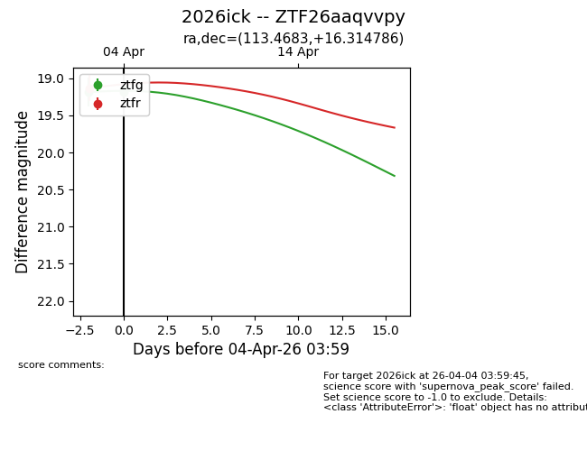
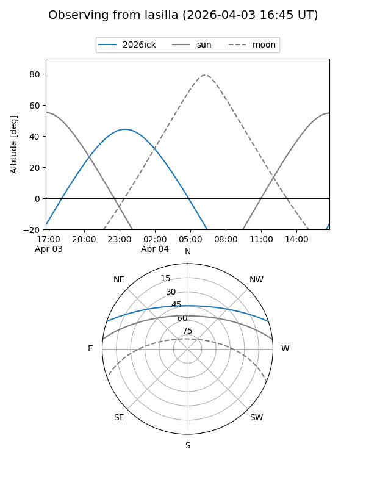
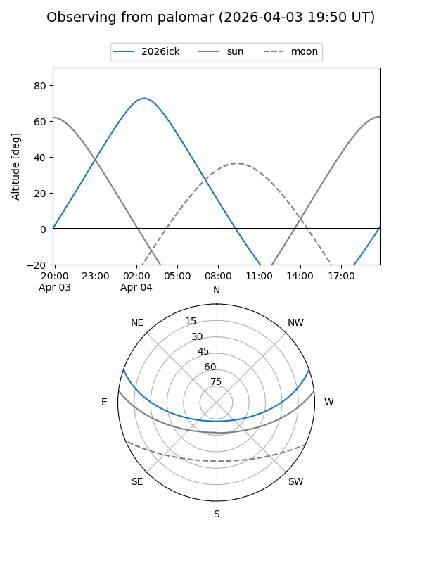
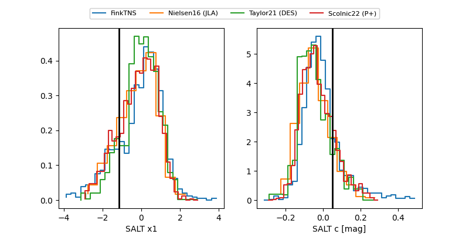

2026ick
Target 2026ick at 2026-04-04 04:02
Aliases and brokers:
FINK: link
Lasair: link
ALeRCE: link
TNS: link
YSE: link
alt names
ZTF26aaqvvpy (ztf,fink_ztf)
2026ick (tns,yse)
Coordinates:
equatorial (ra, dec) = 113.4683,+16.31479
equatorial (HMS+DMS) = 07:33:52.40,+16:18:53.23
galactic (l, b) = (202.7489,+16.57942)
Flags:
Photometry:
last ztfg=19.18, ztfr=19.13
3 ztfg, 1 ztfr detections
Lightcurve

Visibility


Additional plots
